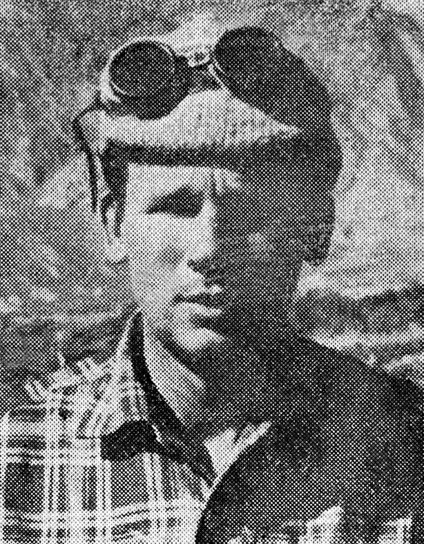

Expedición al Nevado Los Tambillos de 1971, Provincia de San Juan
- Por Antonio Beorchia Nigris -
- Revista del Club Andino Mercedario, año 1971, Número 5 -
Restauración Fotográfica: Centro Cultural Argentino de Montaña, Natalia Fernández Juárez
Fotos: Antonio Beorchia Nigris
Agradecemos a Antonio Beorchia Nigris por compartir con todos nosotros sus exploraciones y aventuras!!
Guillermo Martin |
Antonio nos escribía:
Guillermo: aquí va la nota del Nev. Los Tambillos, tuve que hacerle muchos retoques, (pues mi castellano de entonces era un tanto tarzanesco), procurando no alterar el contenido. En rigor debería re-escribirla en su totalidad, pero la nota perdería su frescura, después de tantos años, no recordaba qué había escrito entonces... Un fuerte abrazo, Antonio
Integrantes: Irene Rost de De La Vega, Susana Ribas de Arguimbau,
Césare Fava,
Héctor De La Vega,
Fausto Barozzi,
Francisco Arguimbau,
Antonio Beorchia Nigris
Baqueanos: Laceriano Balmaceda, Manuel Ontiveros
Nevado de Los Tambillos (5.778 mts.), San Juan
Ubicación del Nevado los Tambillos, San Juan, Argentina
El calor apretaba ese día sobre el río Blanco. Sus aguas cristalinas apenas alcanzaban a mojar los cascos de las mulas y ni siquiera para apagar la sed servían: eran salobres, casi amargas.
Por todas partes piedra gris, playas calcinadas por el sol, lamarales retorcidos y sedientos, alguna mata de jarilla, algún retamo solitario, algunas ruinas de antiguas tamberías.
El aire seco hasta la exasperación corría con fuertes ráfagas río abajo, arrastrando diminutos granos de arena que abrasaban la frente e irritaban los ojos.
La sequía se palpaba, parecía tener vida, alma. Hasta las cortaderas antaño ubérrimas, mostraban sus desgreñadas melenas zarandeadas por el viento y, en los momentos de calma, grandes tábanos de ojos verdes se encargaban de hacernos la vida imposible, a nosotros y a nuestros mulares.
Yo iba ese día de tropero con el viejo Laceriano, pero las cargueras no nos daban mucho trabajo: ellas también caminaban cansinas, olfateando la senda, al tranco manso y en fila india, balanceando apenas las chasnas o los cofres sujetos a las albardas.
En cierto lugar nos cruzamos con Césare Fava que sentado a orillas del río se refrescaba recogiendo agua con el sombrero para mojarse la cabeza y los hombros. Renegaba contra mí y el mundo entero. ¡Él, que ama los helados picos, venir a parar a semejante desierto!
"Antonio —me gritó al pasar— ma donde me trajiste. ¡ Qué clase de expedición es ésta!... ¡ Porco boia!... Tu sei matto, matto... mattoooo!". (“Tú estás loco, loco… locoo”). Me hice el sordo y seguí.
El resto de la columna se había desmembrado a lo largo del río, de manera que de vez en cuando hallábamos alguno de los muchachos sentado bajo la ilusoria sombra de un escuálido monte, reparándose de la quemazón.
Cesarino Fava
Francisco (Paco) Arguimbau
Irene Rost
Verdaderamente fue una jornada brava, máxime para Irene y los demás porteños que cuatro días antes aún estaban trabajando en Buenos Aires, donde el clima no es tan agresivo. Accoroni (con los dos baqueanos y conmigo formábamos el equipo sanjuanino), estaba rojo como un cangrejo, tanto que llegó a intranquilizarme. "Hombre —le dije— ponte un sombrero de alas anchas si no deseas morir achicharrado".
Pero a la oración finalmente dejamos el río Blanco y, trepando por una estrecha quebrada, alcanzamos un arroyo de aguas dulces, encajonado entre paredones de roca cuyo lecho estaba cubierto por espeso monte espinoso. Allí acampamos.
Descargamos las mulas, maneamos las volvedoras, preparamos nuestras "camas” sobre el recado , juntamos leña y finalmente encendimos un robusto fuego.
Ví caras cansadas a mí alrededor y en la mirada de todos un callado reproche. "Mañana — aclaré— subiremos a los llanos de San Guillermo. Allá no hace tanto calor".
A manera de desquite, para reanimarnos un poco, destapamos una botella de ginebra que fue girando de mano en mano hasta bien entrada la noche, dándonos así la oportunidad de escuchar el primer debate Cesare-Fausto, que generalmente empezaba, continuaba y terminaba de la siguiente manera: grandes gritos, ademanes al por mayor, apasionamiento superlativo por cualquier tema que se discutiera, por parte de Cesare y apenas una tímida observación, alguna frase nunca acabada por parte de Fausto. Porque Cesare es extrovertido y Fausto introvertido al máximo. A pesar de lo cual, a pesar de formar una pareja tan despareja, siempre van juntos a la montaña y se quieren como padre a hijo, o como hermano mayor a hermano menor.
Laceriano Balmaceda, baqueano
Antonio Beorchia Nigris
Surgen problemas con los animales de carga
Ya teníamos las cargueras listas cuando nos percatamos que faltaba Accoroni. “¿Dónde está Rodolfo?, preguntó alguien… y éste a los demás: "¡Por allá fue!".
Lo vimos en cuclillas sobre la saliente de una roca, a treinta metros de altura, dibujando rayas con un palito. No dijo nada, no llamó, porque se avergonzaba de no saber bajar solo.
Rodolfo es un apasionado de la arqueología, pero nada sabe de andinismo. Hubo pues que organizar su rescate, llevado a término con pleno éxito por Césare y Héctor de la Vega.
Eso nos atrasó una hora, pero finalmente iniciamos la nueva jornada.
Habríamos recorrido 200 metros, cuando la quebrada se empinó y estrechó de tal manera que apenas conseguían avanzar las mulas en fila india. La senda corría sobre la falda izquierda; unos metros más abajo, entre cortaderas y peñascos, murmuraba el arroyo.
Laceriano abría la marcha, luego seguían las cargueras, detrás yo, finalmente los demás.
Las mulas subían a los tirones, arrancando con fuerza unos metros para detenerse temblonas a retomar aliento. Las cargas recién hechas se balanceaban y torcían peligrosamente, hasta que una albarda se ladeó, haciendo perder pie a la mula, que rodó sobre un costado y se desbarrancó dando tumbos hasta el arroyo, para encajarse allí entre dos pedrejones, sobre su misma carga.
Gritos, silbidos para animar los restantes animales y sacarlos a lugar plano; carreras a pie para enderezar ésta o aquella carga, para finalmente regresar al lado de la caída.
Nevado de Los tambillos - 5.778 mts. A la izquierda el Glaciar Fava
¡Vivía!... Entonces cortamos las cinchas, atamos una soga larga al bozal y tirando entre tres desde abajo desencajamos el animal, consiguiendo que se parara. La carguera chorreaba sangre por una herida en la cabeza, pero era solo una herida superficial.
"!Vaya, si es la Reverendo! -pensé- Ésto le toca en pago por la mochila que me rompió a patadas en febrero último...", y con tan magro consuelo transportamos los bultos arriba y cargamos otra mula en su reemplazo. Una hora más perdida.
Andaríamos un kilómetro cuando a un mulo se le antojó corcovear justo en un pasaje difícil. Ni que decirlo, desparramó la carga cien metros a la redonda, para fugarse cerro abajo. Rodolfo lo persiguió, pero inútilmente, porque el terreno no permitía dar un rodeo para atajarlo: así fue como nos quedamos sin otro carguero. Tuvimos pues que embastar la yegua madrina si queríamos seguir. ¡A mal tiempo, buena cara!
A las 14 hs. alcanzamos al fin los llanos. Ahora sí era un gusto marchar. Varias sendas corrían paralelas permitiéndonos marchar de a cinco en fondo y charlar hasta por los codos. Pero, ¡ojo con salirse de la huella!, porque las oculteras son una trampa mortal para las cabalgaduras, que se hunden sorpresivamente en ellas pudiéndo quebrar una mano o una pata. ¿Y sin sillera, quién se mueve allá?
Ya entrada la tarde caímos al alojo de Huesos Quebrados, sobre el río San Guillermo, siendo la altura del lugar 3.200 metros sobre el mar.
El 27 de noviembre, con siete horas de marcha alcanzamos la tambería incaica de Pircas Negras, siguiendo siempre el curso del río San Guillermo. Amplios pastizales, remansos verdes, patos silvestres meciéndose en las aguas límpidas, piuquenes, shuris con sus polluelos, vacas gordas, lagunitas cubiertas de plantas acuáticas, flores por doquier, aire tibio, colores cálidos: he aquí el valle de San Guillermo.
Fue una jornada maravillosa.
Bajaba el sol cuando vimos destacarse sobre los filos de un cerro la silueta de un paisano. ¡Iba a pie! En esas soledades un hombre a pie es todo un acontecimiento. La silueta permaneció parada unos minutos como observándonos, para luego bajar a los saltos hasta una cueva desde la cual salía un humito gris.
Croquis de aproximación a la cumbre del Nevado de Los Tambillos
"Han de andar campiando vacas” dijo Laceriano. "Vemos a ver", contesté.
Los dos nos apartamos de la columna, y al trotecito avanzamos hacia el distante alojo. Laceriano se ubicó detrás de mí. "¿Por qué se queda atrás?", pregunté. "Pa' que lo baleen a usted primero", contestó. Y era una broma solo a medias.
Rato después descubrimos una pirca que cerraba la cueva, y adentro del precario alojo, tres gauchos sentados. Ninguno de los tres se levantó para saludar ni salió al exterior. Paramos pues a diez metros de distancia, a la espera de la invitación de apearnos. Por fin salió un hombrón gordo con barba de varios días y alpargatas a los pies.
—"Buenas tardes" dijo éste secamente.
—"Buenas..."
—"¿Cómo van las cosas por aquí?" pregunté como para romper el hielo del momento.
—"¡Bien nomás!"
Salió otro personaje, flaco, también calzando alpargatas y tocado con un sombrero alón de copa baja como se acostumbra entre el gauchaje sanjuanino. El tercero no se levantó de su sitio ni nos miró… Observé que algo había escondido debajo de una lona: con seguridad eran cueros de vicuña y una carabina lista. Sin embargo por más que miré con disimulo, no ví una sola arma o un solo cuero, y sí el cuerpo de varios camélidos descuerados, puestos a secar al sol sobre la pirca, como de quien pensaba charquear sus carnes.
"No han de haber muerto a causa de un susto", pensé para mi coleto. A continuación paré las orejas a fin de escuchar la conversación que el gordo mantenía con Laceriano. Hablaban de lo de siempre: de los pastos, de la calidad de las vegas, de si haba vicuñas o no…
—"¿Y no tendrían una media vicuñita para vendernos?", preguntó finalmente Laceriano cuando hubo acabado todos los temas.
El flaco entró a la pirca y salió con media res.
—"¡Usted dirá cuánto es!" dijo Laceriano. "En el campo nos encontramos", contestó el otro.
—"Que Dios se lo pague entonces", concluyó mi compañero.
Al trote, sin habernos apeado, nos alejamos.
"Hubiese preferido que nos cobraran —comenté ya lejos— son pobre gente..."
"Lo que es a mí —contestó el viejo— viniendo de arriba tan sólo a los rayo les temo".

Nevado de los Tambillos, Provincia de San Juan.
Colección de Antonio Beorchia Nigris
Hacemos cumbre sobre el cerro Imán
Al otro día escalamos el cerro Imán, de 5.450 metros s.m.. Sin embargo el matrimonio De la Vega quedó en Pircas Negras, pues ella espera familia y, a pesar de ser una andinista excelente, en esta oportunidad prefirió no realizar excesivos esfuerzos. Salimos: Cesarino Fava, Accoroni y yo, acompañados por Laceriano quien nos arrimó al pie del cerro a lomo de mula, hasta una altura probable de 4.200 metros. El perro "Chino" también se agregó al grupo, de modo que optamos por llevarlo a la cumbre.
Las primeras horas trepamos entre roquedales, subiendo el perro a hombros en los pasajes difíciles hasta alcanzar de ese modo el filo cumbrero y, siguiendo por éste, llegar a la cima principal a las 17 horas.
Pero el Imán no era virgen como suponíamos, porque una pirca de confección moderna lo atestiguaba. Buscamos aquí y allá restos arqueológicos sin resultado, hasta que un tanto decepcionados resolvimos regresar. Sin embargo tuve un palpito y dije:
"Tal vez en la cumbre sur hallemos algo..."
"Nosotros estamos cansados —contestó Césare — andá vos".
Continué pues y con otra media hora de marcha me encontré al lado de un rectángulo ceremonial de 5 x 6 metros, de indudable confección indígena, con sus lados dirigidos a los cuatro puntos cardinales. El mismo se encontraba en el collado, entre ambas cumbres.
Con otra media hora alcancé también la cumbre sur y desde allí me descolgué directamente hacia Pircas Negras, para llegar al campamento ya entrada la noche.
Francisco Argüimbau
El primero de diciembre de 1969 fue día de descanso. Aprovechamos las horas libres para dibujar un planito de la tambería y realizar alguna búsqueda superficial. Hallamos así trozos de cerámica incaica y algún material lítico.
A las 15 hs. de ese mismo día nos alcanzó en Pircas Negras Manuel Ontiveros, el otro baqueano, con una carguera de tiro, quien nos anotició que el matrimonio Arguimbau llegaría más tarde. No aguantando la espera, monté en el mulo de Manuel y fui a su encuentro. Eran dos años que no veía a ese formidable matrimonio y yo deseaba abrazarlos cuanto antes. Por fin, en un recodo del arroyo los ví: Susana marchaba adelante vistiendo un anorak rojo, pantalón vaquero y casco colonial en la cabeza; Paco lucía un poncho gris, antiparras y casco. No sé por qué, pero empecé a reír.
"¿Qué te causa tanta gracia?", preguntó Susana cuando estuvimos cerca y nos apretamos las manos.
"Es que Paco con ese atuendo parece un hongo", contesté risueño. Y luego:
"Viejo del alma, venga ese abrazo".
Los Argüimbau forman lo que podría definirse como la pareja ideal. Aventureros ambos, amigos, enamorados de esta Argentina inmensa, se complementan a la perfección y difícil sería para mí imaginarlos separados. Tienen 4 hijos, pero eso no es motivo para que durante las vacaciones anuales recorran mundo. Aquí en San Juan estuvieron en 1967 conmigo en la zona del Mercedario y desde entonces quedaron prendados de esta tierra áspera. Por eso volvieron.
Con otro día de marcha, bajando por el arroyo de la Ciénaga Colgada, alcanzamos los baños termales de San Crispín, en cuya cercanía vimos numerosas tropas de guanacos y de vicuñas. Manuel aprovechó la ocasión para cazar un ejemplar. Este hecho significó un tremendo disgusto para Cesare, que no soporta bajo ningún pretexto ver matar animales de la fauna autóctona. Es como si asesinaran a un amigo suyo.
Mientras eviscerábamos el guanaco, permaneció a cien metros de distancia dándonos la espalda y con seguridad lloró.
En San Crispín nos bañamos en las aguas termales allí existentes e inútil será decir que los paredones alrededor retumbaron a causa de nuestros gritos de júbilo.
Ese lugar está a 3.300 metros sobre del nivel del mar, encerrado entre paredones rojizos, donde en un hueco de la peña los raros visitantes chilenos veneran a cierto San Crispín imaginario, al cual ofrecen monedas o velas. Como recuerdo me llevé una moneda de 6 y otra de 2 centavos teniendo para el caso que soportar las ásperas críticas de los baqueanos y también las de Césare.
"¡Mala suerte te han de traer", fue la conclusión.
"Me pregunto —contesté— qué clase de santo será éste si por 7 centavos ha de perseguirme y castigarme... ¡un tipo de tan mal genio evidentemente no merece ser venerado!"

Fausto Barozzi
Susana Rivas de Arguimbau y Hector de la Vega
Dos jornadas más y por fin instalamos el campamento base a los pies del Nevada de los Tom-billos, a una altura de 3800 metros sobre el mar. La montaña de nuestro interés se veía imponente con sus dos glaciares descolgándose desde la cima hacia el sur-este. Largamente estudiamos la posible ruta a seguir, optando al fin por la dorsal visible entre ambos glaciares. Esta elección fue sobre idea de Fava y de Héctor, pues ellos buscan la ascensión elegante, los pasajes aéreos, lo más difícil, lo más exigente... Y ya se sabe, el que busca encuentra. Así pues tuve que conformarme y fingir entusiasmo por la vía elegida... que por suerte resultó luego ser verdaderamente hermosa.
Esa noche, alrededor del fuego, nos regalamos con asado de guanaco, vino, postre, fruta, etc., y a renglón seguido quedamos charlando al amor del fuego varias horas, sobre la civilización incaica comparada con la europea del año 1500. Digo charlando, pero en realidad fue un apasionado duelo verbal que aumentó de tono a medida que avanzaba la noche y que disminuía el vino y que, por último, se transformó en un griterío ensordecedor, donde cada cual procuraba hacer prevalecer su opinión. Es una lástima que por razones de espacio no pueda transcribir lo que se discutió aquella noche, pero sí creo oportuno informar brevemente al lector sobre los hallazgos arqueológicos de altura conocidos a la fecha, hallazgos que tienen estrecha vinculación con la expansión incaica desde el Cuzco hacia el sur, y también con nuestro Tambillos.
A principios del siglo XV de nuestra era, el Cuzco era una provincia del reino Colla que por esa época estaba soportando una larga guerra con el reino Chincha-Chanca.. Yahuar-Huaco, séptimo Inca y gobernador del Cuzco se rindió al invasor, pero un hijo suyo se declaró por el monarca ay-mará, venciendo a los invasores y matando al jefe de los chancas. Chuchi-C'apac lo nombró entonces señor suyo en el Cuzco, honrándolo como al salvador del reino Colla. Pero al parecer Huiracocha aspiraba a mayores cargos, y para no andarse con medias vueltas, asesinó a Chuchi-Ca-pac haciéndose proclamar rey en su lugar. Así el imperio de los incas surgió gracias a una abierta traición, similar a la que acabó con los reyes Incas en Cajamarca por obra de Pizarro. Por lo menos es cuanto narran los entendidos.
Hoy en día, por otra parte, las cosas no han cambiado mucho; tal vez seamos menos drásticos en cuanto a los métodos, pero las aspiraciones y los resultados siguen pareciéndose. Al Inca Yupanqui, hijo de Huiracocha, no le agradaba la historia de su familia, que seguramente se vendría murmurando bajo cuerda en los salones de palacio: hizo pues matar a todos los que la conocían e inventó una a su gusto, atribuyéndose nada menos que una descendencia directa del Sol. Así él fue el Inca IX, siendo sus sucesores Tupac Yupanqui, Huayna C'apac, Huascar y Atahualpa.
En 1470 Tupac Yupanqui invadió el sur de Bolivia y el noroeste argentino, lo mismo que Chile, conquistando esos territorios en una sola gran campaña. Construyó dos caminos principales, uno a lo Iargo de las costas del Pacífico, y otro siguiendo el altiplano hacia el sur, prácticamente hasta la provincia de Mendoza. Estos caminos, con sus ramales secundarios, varias tamberías, las fortalezas militares o "pucará" y las "chasqui-huasi" (casas para los mensajeros), testimonian el paso de los incas por nuestra tierra.
Tamberia Incaica de Pircas Negras. Dibujo: Club Andino Mercedario
Pero hay testimonios aún más valiosos y ellos son los santuarios construidos en las altas cumbres de la cordillera de los Andes, desde el Pichu-Pichu en Perú, al Plomo sobre el paralelo 33 en Chile.
Los Incas consideraban a los nevados como "Huacas", esto es, como lugares sagrados, y en ellos sacrificaban cuyes o llamas, quemaban prendas, ofrecían chicha, sancu, objetos valiosos, y asperjaban el lugar con sangre, que a veces era la de los mismos sacerdotes sacada de entre las cejas, o de las víctimas; en muy contadas ocasiones sacrificaban además uno o más seres humanos que enterraban en la misma cumbre o en sus inmediaciones, juntamente con abundante ajuar funerario como estatuillas antropomorfas o zoomorfas de oro, plata y concha marina spondylus. Yo tuve oportunidad de desenterrar una de esas víctimas en el cerro El Toro, a 6.100 metros de altura poco más o menos. Se trataba de un joven de 20 años, estrangulado, el cual aún conserva la marca de la soga alrededor del cuello!...
Sin embargo de preferencia enterraban víctimas sustítutivas, es decir estatuitas de plata antropomorfas, ricamente ataviadas. En los cerros Doña Ana, Licancabur, Plomo. Gallan, Tórtolas, Pichu-Pichu y Quehuar, se hallaron sacrificios sustitutivos de esa clase. (En la actualidad la mayoría de los arqueólogos han descartado la idea de las estatuillas como sacrificios sustitutivos de un ser humano. Opinan, con prudencia, que solo fueron ofrendas votivas).
En los nevados Chachani, Chañi. Plomo, Toro y Pichu-Pichu se descubrieron además los cinco sacrificios humanos conocidos a la fecha. (Por 1970 fecha en la que redacté la presente nota).
Leña se encontró en las cumbres de los nevados y volcanes: Doña Ana, Licancabur, Azufre, Bonete, Negro Overo, Tórtolas, Antofalla, Llullaillaco, Aracar, Tebenquicho, El Toro, El Peinado, y Los Tambililos. Astas de venado, hojas de coca, vasos incaicos, cucharas, tejidos, objetos de madera, hachas, martillos de piedra, etc. se encontraron en los nevados Chuculai, Chachani, Sarasara, Bonete, Negro Overo, Gallán, Tórtolas, Llullaillaco, Aracar, Pichu-Pichu, Morado y Tambillos.
Pircas, explazos (plataformas) ceremoniales, plataformas artificiales, construcciones de piedra, caminos a la cumbre, muros, petroglifos etc., se descubrieron en los cerros Doña Ana, Licancabur, Salla, Sarasara, Azufre, Los Patos, Bonete, Negro Overo, Gallán, Tórtolas, Antofalla, Llullaillaco, Tebenquicho, Pichu-Pichu. El Toro, El Peinado, Mercedario, Morado, Imán y Tambillos.
Observando esta árida reseña de nombres de volcanes y nevados , se notará que algunos se repiten en varias oportunidades: ello significa que en la misma cumbre se descubrieron objetos distintos.
Hago un solo ejemplo: en la cumbre de Las Tórtolas, -montaña limítrofe entre la provincia de San Juan y Chile-, se descubrió una gran plataforma artificial con sus respectivos muros, pircas a varias alturas, morteros, manos de moler, estatuitas de plata y concha marina, cerámica, prendas de lana, abundante leña y restos de carbón.
Como se ve, es suficiente material para despertar el interés de cualquier museo. Por mi parte, con años de observación, pude sacar las siguientes sencillas conclusiones: todo alto cerro, volcán o nevado cercano al camino del inca, con tamberías importantes a sus pies y que se destaque sobre las restantes montañas alrededor, guarda en su cumbre un santuario de altura incaico.
Basándome en esta breve fórmula, busqué antecedentes y hallé que el Nevado de los Tambillos reunía los requisitos necesarios, y ello nos dará una idea de por qué nuestro Césare sufrió desde el comienzo de la expedición una aguda "psicosis de la momia"... pero no solo él, sino también nosotros.
La camiseta andina incaica, en la cumbre del Nevado de Los Tambillos, en el momento de su hallazgo
En la cumbre del nevado Los Tambillos aparecen objetos de origen incaico
El 5 de diciembre partimos para la gran aventura. Íbamos Césare Fava, Héctor de la Vega, Fausto Barozzi y yo para escalar el nevado; los demás nos acompañaron hasta los 4.500 metros, para regresar al campamento base desde donde poder seguir nuestros pasos con el largavista.
Las primeras horas de ascensión resultaron sumamente pesadas y si se quiere, un tanto expuestas. Trepamos sobre acarreo primero, para finalmente adentrarnos en un dédalo de roquedales muy meteorizados, pequeños rellanos, canaletas y torreones que nos exigieron un máximo de esfuerzo para poderlos superar.
Césare llevaba la delantera buscando, teóricamente, el camino más fácil. Pero, ¿qué digo?, nuestro amigo elegía a prepósito la ruta expuesta y directa, la más aérea y elegante...
¡Estos alpinistas son incorregibles! Hechos en otra escuela, con técnicas más depuradas que nos-otros, pobres andinistas, no pueden acostumbrarse a la idea que un monte vírgen es mejor subirlo por la vía más fácil y, en posteriores ascensiones, buscar la ruta difícil. Claro... él que fue al Torre con Maestri, que hizo el Cuerno en solitaria, que venció la cumbre central del Chañi en escalada libre (y que además dejó los diez dedos de los pies congelados en el Aconcagua), deseaba sin dudas demostrarnos que este Tambillos, este "Tortillón" como él lo apodaba, no era gran cosa.
Nosotros lo seguíamos con cierto placer en principio, hasta que, viéndole 50 metros encima nuestro lidiar en un pequeño diedro vertical, expuesto sobre el vacío, optamos por retirarnos estratégicamente y rodear ese gran peñón de roca. Encima del mismo nos juntamos nuevamente y, como eran ya las 19 hs., decidimos acampar allí en un pequeño portillo, siendo la altura del lugar de 5.200 metros sobre el mar, aproximadamente.
¡Apenas cabíamos los cuatro en la carpa pentagonal!... Luego juntamos nieve frente a la entrada de la carpa, mientras Héctor dedicaba largas horas a prepararnos té y sopas. Era una espera enervante: una hora o más para obtener un litro de agua; nada para apagar la sed que nos abrasaba.
A las 24 decidimos finalmente dormir.
Amaneció espléndido. Leves vapores subían desde el valle, rozaban nuestra carpa y continuaban suaves hacia lo alto. Un mar de nubes a nuestros pies nos daba la impresión de hallarnos en una isla.
La escalada en roca fue necesaria en algunos tramos de la ascención
Calzamos los grampones, nos atamos los cuatro en una sola cordada y entramos de inmediato al glaciar, que en ese lugar tenía una pendiente promedio de 45 grados. La nieve dura, compacta, apenas ondulada, ofrecía óptima presa para las puntas de acero, transformando nuestro avance en un verdadero placer. Crujía la nieve al desmenuzarse bajo los pies; la niebla seguía envolviéndonos y todo alrededor era blanco, un mundo blanco sin final visible. ¡Qué bien marchábamos! Casi sin descansos, casi sin sentirlo.
Luego a Cesare se le salió un grampón, a Héctor otro… en el mismo momento. Con sangre fría ambos lo colocaron en la mano derecha, se afirmaron con la piqueta en la izquierda, y avanzaron así, a cuatro manos, hasta dar con un lugar de pendiente menos pronunciada. Superado el problema, seguimos.
Una grieta que cruzamos sin dificultad, otra más arriba, grandes placas de hielo verde y, finalmente, a las 12,30 el glaciar se suavizó hasta transformarse en una “olla" de unos 200 metros de diámetro que iba a morir a los pies de la cumbre. Era un morro de tierra y roca meteorizada que se levantaba diez metros encima de los hielos. En esos momentos yo sentí una gran euforia, unas tremendas ganas de correr. Pero Césare, ese bendito Césare, optó por descansar unos minutos… hasta sugirió que tomáramos una lata de jugo de frutas que llevábamos.
"Pero si estamos a un minuto de la cumbre".
“Tomemos primero el jugo".
"¿Qué apuro hay?", lo apoyó Héctor.
"Seguro...'' dijo Fausto.
Tenía ganas de decirles unas cuantas verdades pero Césare me cortó en seco:
"¿Dijimos que la mayoría resuelve no?"
Tragué saliva. Ellos, a los cuales yo apodaba "los acelerados" pues siempre andaban con los minutos medidos, ahora a 30 metros de la cima deseaban tomar su jugo de frutas...
Entonces los miré a los ojos y entendí.
Un año de preparativos, de proyectos, se cristalizaba en esos mementos. Bueno era entonces prolongar un poco el placer de la victoria, saborearlo, acostumbrarse a la idea... para no llorar.
Circulo de piedras de guijarros central en la cumbre del Nevado de los Tambillos
A las 12,50 nos encaminamos despacito. ¡Qué ruido hacían los grampones sobre las piedras! Y finalmente el grito de Cesare:
"¡Porco boia, é giá stato scalato ragazzi!" (“¡Carajo, ya fue escalado muchachos!”)
Los tres restantes nos arrimamos decepcionados al círculo de piedras, de un metro de diámetro, que coronaba la misma cima. Ví un guijarro menor marcando el centro, entendí, y un tremendo sacudón me estremeció de pies a cabeza.
"¡Es obra de los indios! —casi grité— ¿no ven la piedra en el centro?"
Nos abrazamos todos y uno lloraba, el otro reía...
Cesare, mientras, (que minutos antes no andaba apurado) empezó a escarbar febrilmente en el sitio de la piedra central: con la piqueta, con las manos, con las uñas.
Apareció así, a 20 centímetros de profundidad, algo como una tela.
Ví cómo Cesare palidecía, cómo empezaba a temblarle la barbilla… Finalmente explotó:
"La momia ragazzi... la momia... LA MOMIA AAA!"
Nos electrizamos. "A ver, déjame ver".
"¡Aquí está, aquí está!". Jadeábamos.
No aguantando más la emoción, me tiré al suelo y gritando como un endemoniado, me revolqué, patalee en el aire, hasta tranquilizarme parcialmente.
"A ver las máquinas... saquen fotografías... despacio… despacio".
“Cuidado con arruinarla". "¡Esto se sale!"
"¿Qué es esto?"
"Parece un tejido apelotonado". ¿Y la momia? Todos me miraron…
"Contendrá una ofrenda –dije- seguro que contiene una estatuita de .plata".
Desenvolvimos despacio el tejido: apareció un penacho de plumas blancas engarzadas con soguillas de fibra vegetal. Un trozo de sustancia oscura, como charqui, o sangre amasada con harina de maíz, cayó al suelo. Nada más.
Nos miramos de nuevo sin hablar.
Finalmente estiramos el tejido, para descubrir que sé trataba de una hermosa camiseta andina, incaica sin duda a juzgar por la guarda de vivos colores que la adornaba. Se veía el verde, el blanco le amarillo, el rojo, el celeste...
Entonces nos conformamos.
Un rato después Héctor se alejó hacia la plataforma que se observaba en dirección al sur: lo vimos pararse a menos de una cuadra y gesticular con fuerza.

Cumbre del Nevado de los Tambillos, al fondo Cesarino Fava, Provincia de San Juan
Colección de Antonio Beorchia Nigris
Bajamos al trote. "Aquí hay un muro", gritó. Era el conocido explazo o plataforma ceremonial encerrada por una pirca simbólica, esto es, un muro con sus lados interiores y exteriores apenas marcados por dos hileras de piedras paralelas, equidistantes 50 ó 60 centímetros. Medí ese cuadrángulo a grandes zancadas y eran 7 x 12 pasos. ¡Las mismas medidas que el explazo del cerro El Toro.
Consulté la brújula: la dirección de sus lados mayores era NNE al SSO.
Otro grito de Héctor me hizo correr hacia un montón de leña semienterrada. Más allá otro montón sobresalía apenas de un banco de nieve.
"Es la leña para quemar las ofrendas —dije—. En casi todas las altas cumbres escaladas por los Incas se encontró. Han de ser 200 ó 300 kilos en total. De lejos se trajo, de Chile tal vez, o desde el río de las Taguas; de esta vertiente del nevado no vimos arbustos grandes".
Pequeños roquedales rojizos cortaban más allá el lugar formando breves plataformas ubicadas a distintos niveles. En una de ellas descubrimos otro pircado de 5 x 6 metros (nótese la coincidencia con las medidas del cerro Imán) y sobre su lado norte, una excavación de un metro de profundidad por dos de diámetro.
"¡Nos robaron la momia! —exclamó Cesare al ver la fosa— aquí estaba ¡seguro!".
Alrededor de la fosa levanté algunos trozos de aríbalo incaico, uno de los cuales presentaba un agujero redondo producido por un golpe reciente, pues las aristas del mismo eran de color rojizo, mientras los demás lados se observaban opacos y sucios.
Un poco más allá descubrí una especie de mano de mortero, donde se veía grabada toscamente una cara humana y, a su lado, otra piedra labrada con forma de paralelepípedo. (Años después encontré otros pequeños paralelepípedos semejantes a los dos del nev. Los Tambillos, siempre relacionados con un santuario incaico de alta montaña. Su significado escapa hasta hoy a los arqueólogos).
"¡Che Antonio —gritó Héctor— mira, mira esto!"
Me mostró una palita de madera dura, un tanto maltratada por la intemperie junto a una especie de estilete o palo aguzado de 50 centímetros de largo. Ambas piezas estaban apoyadas sobre las rocas a pocos metros del pozo.
"Es igual que los dos cuchillos que encontré en el Chañi", aseveró Césare.
Todos fuimos a registrar esa zona, pero Fausto se quedó sentado con la cabeza entre las manos. “¿Qué te pasa?", preguntamos. "Me siento mal, tengo náuseas y deseo vomitar".
"¡Es la puna hombre!", contestamos para animarlo. Luego encontramos otra pirquita donde aparecieron trozos de carbón, una cuenta celeste y plumas blancas. Finalmente, en vista de que Fausto no mejoraba, resolvimos regresar.

Nevado de los Tambillos Cesarino Fava (izq.) y Fausto Barozzi (der.)
Colección de Antonio Beorchia Nigris
El retorno a Malimán
Descendimos por la parte más empinada del glaciar, siguiendo una recta imaginaria que concluía en la carpa del campamento de ataque y que alcanzamos con una sola hora de descenso. Desde allí, con las mochilas a cuestas, bajamos hasta una hermosa laguna morrénica con cuyas aguas desde hacían horas soñábamos saciarnos.
El regreso a Malimán fue un continuo sucederse de paisajes espléndidos, pasando por el portezuelo de San Guillermito, siguiendo por el río de La Gloria, el río San Guillermo, los llanos homónimos, el río Blanco, y finalmente la estancia de El Chinguillo.
Irene y Susana eran las más entusiastas con los lugares visitados; sus frases preferidas eran: "¡Qué hermoso... qué lindo… qué maravilla!". Paco, apodado por mí como el "León de la Ciénaga Colgada", discurría sólo sobre los millares de vacunos que podrían engordar allí; hacía planes fabulosos; se veía transformado en un estanciero con tropas de mulares y de caballos, con rebaños inmensos, con casas primorosas en este o aquel lugar. Pero no eran ideas descabelladas, ensueños, como podría pensarse; los llanos de San Guillermo, con más de un millón de hectáreas, vieron a su tiempo pastar y pasar grandes toradas o novilladas para Chile. Los Várela de Malimán llegaron incluso a alfar breves extensiones de terreno a lo largo del río que corta esos campos; en ellos pueden engordar durante todo el año 5.000 vacunos mestizos, según nuestro Laceriano. ¡Y vimos tan sólo 60! Medite sobre esto el dueño de esas tierras, pues dueño tienen y si él no las puede trabajar, deje que las aproveche quien más las necesite.
La camiseta andina del Nevado Los Tambillos - detalle de la guarda
El 11 de diciembre llegamos a Malimán los que formábamos la retaguardia de la expedición. Éramos Césare, Rodolfo, Laceriano y yo. Los demás, nuestros queridos "acelerados", viajaron esa misma tarde a San Juan. Nosotros sin embargo no teníamos apuro. ¿Para qué? ¿Para regresar un día antes a la oficina? En cambio preferimos estirar las horas al máximo en el Chinguillo, donde la hospitalidad es tan buena que nunca se alejaría uno de allí. Tanto remoloneamos que al fin partimos con el sol dentro. A las cargueras era ahora menester atajarlas, pues sabiéndose cerca de la querencia, galopaban sin descanso.
“¡Tope, tope, don Antonio... —gritaba Laceriano— la pucha con estos animales, no halla uno cómo sujetarlos!".
Grandes nubes de tierra levantábamos al cruzar por los barreales secos y cuando anocheció, no hubo más remedio que confiar en las mulas y soltarles las riendas. Apenas si yo alcanzaba a ver de cuando en cuando la brasa rojiza del cigarrillo del baqueano, allá adelante.
Dale galope… y tierra, montes que pasaban como una exhalación, salpicar de agua al cruzar los brazos secundarios del río, estruendo de cascos sobre los cantos rodados. Por último el ladrar de los perros a lo lejos.
Malimán de Arriba. Cuatro casas desparramadas, con muchos alfalfares.
Hallamos a Manuel un tanto achispado, pero servicial y atento como siempre. Descargamos y soltamos los mulares en los potreros. Luego, sentados entre albardas y aparejos, nos castigamos largas horas con vino sanjuanino, con cerveza, y no sé qué más. Lo vieran al amigo Césare cantar a voz en cuello, y al que les habla hacerle coro. Vieran a Rodolfo entonar en varias lenguas y a los dos baqueanos, con la cabeza recostada sobre sus monturas, meta tonadas cordilleranas.
¡Cómo nos queríamos esa noche!
En cuatro patas nos acostamos y a la mañana siguiente ni las gallinas, ni los pavos, ni los gansos que nos caminaban encima, consiguieron hacernos madrugar.
San Juan, 30 de diciembre de 1969
Notas Relacionadas:
- Primera Ascensión al Pico Mario Fantin (5.100 mts)
- Primera Ascensión al Pico Polaco (6.000 mts), Enero 1958
- Cesarino Fava, el Pata Corta
Área Restauración Fotográfica del CCAM: Natalia Fernández Juárez
Es nuestra misión dar a conocer la Cultura de Montaña Argentina y por lo tanto es prioritario que si es utilizado nuestro material visual, acuerden con la institución su uso. Si están interesados en el material fotográfico del CCAM, le sugerimos que se contacten a: info@culturademontania.org.ar
Todo el material fotográfico del CCAM es restaurado y publicado en alta resolución.

{kind=link}